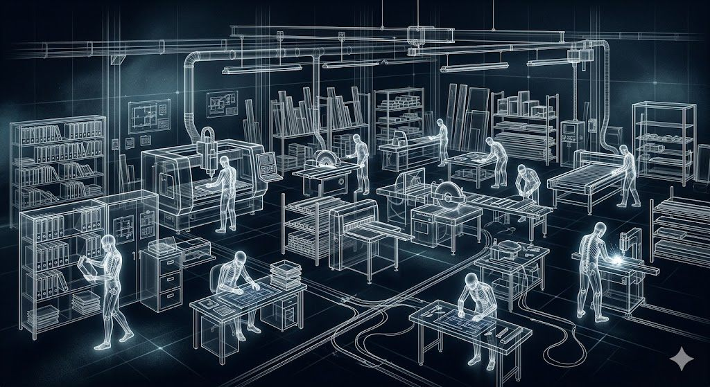

Почему в кризис правильные проблемы стоит создавать не на входе, а внутри компании
У мебельщиков сейчас странное время, и описать его без вранья довольно сложно.
С одной стороны, хочется расти, продавать больше, снова загрузить производство, вернуть нормальный поток замеров, закрыть монтажные бригады работой, заставить рекламу давать заявки не по цене крыла от самолёта и в принципе вернуться в то прекрасное состояние, когда основная проблема была не «где взять заказы», а «как всё это успеть».С другой стороны, не надо обманывать себя красивыми управленческими фразами. Многие мебельные компании сегодня были бы счастливы увеличить число заказов, замеров, проектов, доставок и монтажей, но не могут. Они не сидят на огромном спросе, который боятся обработать, и чаще проблема обратная: мощности недогружены, люди заняты неравномерно, заявки дороже, клиент осторожнее, сделки длиннее, а старые способы привлечения дают всё меньше отдачи. Поэтому совет в духе «создайте себе проблему, резко увеличив поток заявок» сейчас звучит мимо. Это было бы прекрасно, если бы поток можно было включить, как свет в офисе, но рынок не обязан участвовать в наших управленческих упражнениях, ведь у него своя программа, плохая коммуникация и довольно неприятное чувство юмора.
Значит, идею «создать себе правильную проблему» надо разворачивать в другую сторону. В кризис мебельной компании нужно создавать себе нагрузку не за счёт внешнего потока, которого может и не быть, а за счёт внутреннего недогруза: старой клиентской базы, замороженных сделок, неразобранных ошибок, слабых процессов и тех участков, до которых в период роста никогда не доходили руки. Если раньше перегрузку устраивал рынок, то сейчас компания должна сама создать себе управляемую нагрузку: не на производство ради производства и не на менеджеров ради видимости занятости, а на систему, чтобы понять, что мешает зарабатывать больше даже при меньшем потоке.
Кризис - это не только падение спроса, это ещё и рентген. Он показывает, что компания на самом деле умеет делать без попутного ветра. Ведь когда рынок растёт, многого можно не замечать:
- плохая CRM компенсируется количеством заявок,
- слабая конверсия - трафиком,
- неразобранная база клиентов - новыми входящими,
- тяжёлый ассортимент - оборотом,
- кривые КП - тем, что часть клиентов всё равно покупает,
- переделки - маржой,
- рекламации - тем, что очередь стоит.
Когда рынок сжимается, эта благотворительность заканчивается, и выясняется, что бизнесу нужно не просто «больше лидов», а лучше использовать каждый уже существующий контакт и каждый старый клиентский след, каждое отправленное КП, каждую недокупившую заявку, каждый отзыв, каждую рекламацию, каждую свободную смену, каждый недогруженный день дизайнера, технолога, менеджера, монтажника и руководителя.

Ренген мебельного бизнеса
Собственно, это и есть взрослая версия идеи «создайте себе проблему» в нынешних обстоятельствах. Не «дайте в три раза больше заказов», если их нет, а «создайте управленческую нагрузку на те места, которые в период роста были спрятаны под потоком».
Недогруз - это не отпуск системы
Самая опасная реакция на недогруз звучит так: «сейчас заказов меньше, значит, подождём; как рынок оживёт, тогда и займёмся развитием». Понятно психологически, но управленчески чаще всего это ошибка, потому что когда рынок оживёт, никакого времени на систему опять не будет: появятся срочные заказы, горящие сроки, клиенты, поставщики, доставка, монтаж, рекламации, запуск рекламы, новый ассортимент, акции, выставки, маркетплейсы, сезонность и всё остальное, что превращает мебельный бизнес в многосерийную драму с элементами производственного фольклора. В период роста компания себя спокойно не перестраивает, она бежит.
А недогруз, как ни странно, даёт окно, пусть не комфортное, то есть скорее окно, через которое слегка дует и видно, что во дворе опять что-то горит, но всё-таки окно. Пока часть мощностей свободна, можно делать то, на что раньше не хватало времени: (1) разобрать старую базу клиентов, (2) проверить потерянные сделки, (3) пересобрать коммерческие предложения, (4) настроить повторные касания, (5) описать стандарты замера и проектирования, (5) пересчитать ассортимент и (6) маржинальность, (7) проверить упаковку и (8) монтажные ошибки, (9) привести в порядок карточки товаров и контент, (10) навести порядок в CRM, провести обучение на реальных кейсах, (11) прогнать внутренние стресс-тесты без новых клиентов и подготовить компанию к будущему спросу, на случай, если он вернётся не таким, каким был. А вдруг?! :-)
Недогруз можно прожить как унылую паузу, а можно использовать как ремонтную яму, в которую бизнес наконец заехал не потому, что стал мудрым, а потому что дорога закончилась.
Вопрос только в том, что собственник будет делать в этой яме: жаловаться на дорожников или смотреть, где у машины давно отваливается подвеска.
Кризис не требует имитации бурной деятельности
Тут важная оговорка. Недогруз не означает, что людей нужно срочно завалить бессмысленными задачами, чтобы «не сидели». Это нынче популярная управленческая болезнь: если сотрудник выглядит не занятым, ему надо что-нибудь дать и желательно срочное, не очень понятное и с формулировкой «продумай». Так рождаются внутренние проекты, которые никто не просил, презентации, которые никто не читает, регламенты, которые никто не применяет, таблицы, которые создаются ради таблиц, и корпоративные инициативы, тихо умирающие в папке «Разное».
Создавать правильные проблемы - это не значит создавать занятость. Правильная проблема должна иметь связь с будущей выручкой, маржой, скоростью, качеством, повторными продажами, снижением ошибок или повышением управляемости. Если задача не помогает компании лучше продавать, быстрее обрабатывать клиента, точнее производить, меньше ошибаться, удерживать базу, дешевле доставлять, понятнее считать экономику или сильнее готовиться к будущему спросу - это не управляемая нагрузка, а офисная физкультура, а кризис - это не лучшее время для физкультуры с документами.
Главный сдвиг: не «как получить больше потока», а «как перестать терять уже имеющийся»
В период роста главный вопрос обычно звучит так: «где взять больше клиентов?». В период кризиса он остаётся, но рядом с ним появляется более неприятный и одновременно более полезный: «сколько денег мы уже теряем на том потоке, который у нас есть?». Это не философия - это очень практичные вопросы:
- Сколько заявок не обработали быстро?
- Сколько клиентов не вернули вторым касанием?
- Сколько КП отправили и не дозвонились?
- Сколько сделок ушло из-за неясной цены?
- Сколько заказов не случилось, потому что менеджер продавал изделие, а клиент покупал спокойствие?
- Сколько повторных продаж не состоялось, потому что со старой базой никогда никто не работал?
- Сколько рекомендаций не получили, потому что после монтажа никто нормально не спросил клиента о впечатлениях?
- Сколько рекламаций повторяется, потому что их воспринимают как отдельные неприятности, а не как данные.
В кризис нельзя позволить себе роскошь терять то, что уже пришло. Если раньше компания могла обращаться с частью входящего небрежно, ведь придут новые, то сейчас такая модель становится дорогой: новые могут не прийти тли придут по такой цене, что их будет жалко даже обрабатывать. Поэтому управляемая нагрузка в недогрузе должна начинаться не с внешнего увеличения потока, а с внутреннего повышения плотности работы с тем, что уже есть. Это менее эффектно, чем «мы увеличили лиды в 10 раз», зато полезнее.
Проблема первая: старая база клиентов лежит мёртвым грузом
База клиентов у мебельной компании, как правило, есть, но формально, то есть "как бы" В бухгалтерии есть, в CRM вроде тоже, у менеджеров в телефонах, в старых таблицах, в переписках, в истории заказов, в мессенджерах. Где-то в недрах компании лежит целая цивилизация бывших клиентов, некупивших клиентов, клиентов, которые думали, клиентов, которые просили расчёт, клиентов, которые купили один раз и могли бы вернуться, но компания после продажи повела себя как человек, который получил желаемое и внезапно потерял память. В период роста на это не обращают внимания: зачем работать со старой базой, если новые заявки идут? В кризис это становится преступной роскошью.
Правильная нагрузка - реанимация базы. И не в формате «сделать рассылку всем» - это обычно заканчивается тем, что клиент получает сообщение в стиле «у нас акция», удаляет его, а компания гордо считает, что поработала с базой. Нужен другой вид соблазнения, нужна сегментация: отдельно покупатели кухонь, шкафов, детских, матрасов; отдельно те, кто делал расчёт, но не купил; те, кто был на замере, но не закрылся; те, кто покупал давно и может быть готов к новой покупке; те, кто оставил хороший отзыв; те, кто был недоволен, но проблему закрыли; те, кто покупал во время ремонта и мог отложить часть мебели на потом.
Дальше - гипотезы. Покупателю кухни можно предложить хранение, обеденную зону, прихожую, шкаф, замену фурнитуры, сервис, уход, дополнительный модуль. Покупателю детской через два-три года, скорее всего, понадобятся стол, шкаф, новая кровать, стеллаж, нормальное место для учёбы. Покупателю матраса - подушки, чехол, кровать, основание. А клиенту, который не купил после КП, можно не «впаривать», а задать нормальный взрослый вопрос: что остановило, что было непонятно, какой вариант выбрали, чем мы проиграли.
Это создаёт компании правильную проблему: вдруг выясняется, что база грязная, история неполная, сегментов нет, ответственных нет, поводов для контакта нет, менеджеры не умеют возвращаться к старым клиентам, CRM не помогает, а мешает, телефоны устарели, согласия непонятны, а вся база существовала как архив, а не как актив. Отлично! Вот она, полезная проблема. Не надо придумывать новый спрос, если вы ещё не научились работать со следами старого.
Что смотреть в процессе: сколько клиентов удалось сегментировать; сколько контактов актуальны; сколько вообще ответили; сколько дали внятную информацию о причинах отказа; сколько согласились на повторный расчёт; сколько запросили дополнительный товар или услугу; какие причины отказов повторяются; какие сегменты живые, а какие - кладбище. Прямые продажи здесь, конечно, важны, но главное другое: компания превращает старую клиентскую пыль в управленческие данные.
Проблема вторая: коммерческие предложения не продают
В период недогруза надо внимательно посмотреть на КП. Не на одно идеальное КП, которое показывают собственнику и которым все гордятся, а на реальные предложения, которые уходят клиентам каждый день. В мебельной компании КП - это часто главный момент истины, ведь до него клиент мог общаться с менеджером, смотреть сайт, читать отзывы, приходить в салон, обсуждать материалы, но в какой-то момент он получает документ, где должны соединиться цена, ценность, состав, визуализация, сроки, условия, доверие и следующий шаг. И вот там часто живёт грусть.
КП бывает слишком техническим, слишком длинным, слишком пустым, слишком непонятным, слишком похожим на счёт, слишком перегруженным терминами, слишком бедным визуально, слишком не объясняющим, почему один вариант дороже другого, слишком не отвечающим на страхи клиента. А клиент в кризис осторожнее: он дольше думает, сравнивает, боится ошибиться, хочет купить, но ищет повод отложить. И если КП не помогает ему принять решение, то оно помогает ему этого решения не принять.
Правильная нагрузка - взять 30, 50, а лучше 100 последних КП и разобрать их как продукт. Не как «документы, которые менеджеры отправили», а как инструмент продажи. Проверить: понятно ли, что входит в цену; есть ли визуализация; видит ли клиент разницу между вариантами; объяснены ли материалы простым языком, а не клингонским; показаны ли сроки; понятны ли условия доставки и монтажа; указан ли следующий шаг; есть ли срок действия предложения; есть ли аргументация, почему это решение подходит конкретному клиенту; есть ли работа со страхом ошибки; есть ли человеческий язык, а не мебельный канцелярит; видно ли, что компания думала о клиенте, а не просто выгрузила спецификацию.
После такого разбора обычно становится ясно, что сделки теряются не только из-за цены. Цена, конечно, важна, но клиент чаще выбирает не самое дешёвое, а самое понятное и безопасное. Если у конкурента КП объясняет, а ваше требует расшифровки, никакая скидка может и не спасти.
Дальше можно сделать месячный эксперимент: одна группа менеджеров работает по старому КП, другая - по новому стандарту. Сравниваются не только продажи, но и промежуточные сигналы: ответил клиент или нет, сколько уточняющих вопросов задал, попросил ли второй вариант, вернулся ли после паузы, какие возражения появились, сколько сделок перешло на следующий этап, какая средняя маржа, где клиенту было непонятно. Это и есть пример правильной проблемы в недогрузе: заказы не увеличились сами, но компания нагрузила собственное коммерческое мышление. И отдача от такой нагрузки часто приходит быстрее, чем от очередного рекламного канала.
Проблема третья: потерянные сделки никто не изучает
В мебельном бизнесе потерянные сделки чаще всего закрываются пятью словами: «дорого», «думает», «не вышел на связь», «купил у других», «не актуально». Это не аналитика, это кладбищенские таблички: они сообщают, что сделка умерла, но не объясняют, от чего. В период роста на это закрывали глаза: ну, потеряли, другие придут. В кризис придётся становиться судебно-медицинским экспертом собственных продаж.
Правильная нагрузка - аудит потерянных сделок за последние три-шесть месяцев. Если база большая, не обязательно сразу всех , хватит и сотни. По каждой нужно понять, откуда пришёл клиент, что хотел купить, какой был бюджет, на каком этапе потеряли, был ли замер, было ли КП, сколько времени отвечали, сколько касаний сделали, что именно сказал клиент, был ли реальный конкурент, что можно было сделать иначе и можно ли вернуть его сейчас.
Работа неприятная: она показывает не общую картину, а конкретные промахи:
- где забыли перезвонить,
- где отправили КП и исчезли,
- где не уточнили бюджет,
- где пытались продать дорогой вариант человеку, который просил рациональное решение,
- где не предложили рассрочку,
- где клиенту было страшно, а менеджер говорил про фурнитуру,
- где сроки убили сделку,
- где менеджер решил, что клиент «просто интересуется», хотя клиент был готов купить и ему просто требовалось нормальное сопровождение, а не намёки.
Зато такой разбор даёт самое ценное: компания начинает видеть не вход и выход воронки, а причины утечек между ними. После аудита повторяющиеся причины превращаются в изменения: новый сценарий первого контакта, новый стандарт КП, обязательное повторное касание после отправки предложения, нормальное разделение причин отказа в CRM (а не «другое»), библиотека ответов на типовые возражения, пакет бюджетных альтернатив, чёткое объяснение сроков и этапов, тренировка менеджеров на реальных звонках, пересмотр рекламных обещаний, если они приводят не тех клиентов. Тысячу заказов это завтра не даст, но конверсию на уже существующем потоке поднять может. А в кризис поднять конверсию иногда важнее, чем купить ещё один дорогой источник трафика.
Проблема четвёртая: производство недогружено, но не становится лучше
Недогруженное производство - это больно. Станки стоят, люди ждут, постоянные расходы остаются, собственник смотрит на мощности и думает: «вот бы сюда заказы». Боль понятная, но если заказов сейчас меньше, это не значит, что производство должно просто ждать. Недогруз - это редкая возможность сделать то, что при полной загрузке физически невозможно. Не имитировать работу, не делать склад неликвида «на всякий случай», не производить то, что потом годами будет занимать место и напоминать о смелости, которую никто не просил.
А улучшать производственную систему. Загрузить свободное время не случайными изделиями, а работами, которые повышают будущую пропускную способность, качество и предсказуемость: нормирование операций, проверка фактического времени на типовые изделия, технологические карты, разбор причин брака, тесты упаковки, отработка стандартных узлов, сокращение времени переналадки, организация рабочих мест, ревизия складских остатков и неликвидов, образцы для салона, маркетплейсов, дилеров и контента, разделение стандартного и нестандартного потоков, упрощение конструкций без потери ценности для клиента.
Если производство недогружено, не надо только плакать, что нет заказов, надо задать другой вопрос: что должно измениться в производстве, чтобы при возвращении заказов оно работало быстрее, стабильнее и с меньшим браком? При полной загрузке у производства нет времени думать, так как "оно делает". Да, Иногда правильно, иногда героически, иногда с тихим отчаянием, а вот при недогрузе появляется шанс вынуть голову из станка и наконец посмотреть на систему.
Хороший формат - взять одно типовое изделие или одну линейку и провести полный разбор:
- сколько реально занимает подготовка,
- сколько каждая операция,
- где возникают ожидания,
- где появляются ошибки,
- какие детали чаще всего переделываются,
- какие размеры и узлы создают проблемы,
- какие материалы дают больше брака,
- что можно стандартизировать,
- что упростить,
- что изменить в передаче заказа из продаж и проектирования.
После такого разбора часто выясняется, что производство страдало не от нехватки людей, а от плохого входа или от слишком широкого ассортимента, или от постоянных исключений, или от того, что стандартные изделия каждый раз проходят как нестандартные. Это и есть правильная проблема: не «давайте загрузим производство хоть чем-нибудь», а «давайте используем недогруз, чтобы производство стало готово к нормальной загрузке».
Проблема пятая: замеров мало - значит, разбираем старые
В изначальной логике этой статьи было бы просто: увеличьте поток замеров и увидите, где ломается процесс. Но сейчас это звучит почти издевательски: многие были бы рады увеличить поток замеров, но не могут. Значит, работать надо не с новым потоком, а с архивом и качеством процесса: если новых замеров мало, берите старые.
У любой компании есть завершённые заказы, проблемные заказы, заказы с переделками, заказы с конфликтами, заказы, где всё прошло хорошо, и заказы, где монтажник на объекте внезапно становится археологом, потому что обнаруживает следы древних ошибок замера. Выберите 30–50 кейсов и разложите их по группам: прошли без проблем; были уточнения после замера; были изменения проекта; были производственные ошибки; были проблемы на монтаже; были рекламации; были задержки. И посмотрите, что было зафиксировано на этапе замера:
- были ли фотографии,
- были ли достаточные размеры,
- отмечены ли углы, стены, коммуникации, плинтусы, розетки, трубы, ниши, подъем, занос, лифт,
- зафиксированы ли обязательные требования,
- было ли понятно, что клиент считает главным,
- были ли предупреждения о рисках.
Часто выясняется, что замер в компании считается технической процедурой, хотя на самом деле это момент сбора требований, управления ожиданиями и предотвращения будущих расходов. Если замер слабый, компания платит позже: проектировщик уточняет, производство переделывает, монтажник объясняет, сервис выезжает, собственник грустит.
И, как ни странно, в недогрузе можно проводить учебные замеры. Звучит немного по-школьному, но таки работает. Берётся реальный объект или смоделированная ситуация, и замерщики, дизайнеры или менеджеры проходят процедуру по стандарту. Потом результаты сравниваются: кто что заметил, кто что забыл, кто как задавал вопросы, кто как фиксировал пожелания, кто увидел риски, кто понял бюджет, а кто просто снял размеры и ушёл. Это создаёт полезную внутреннюю нагрузку на профессиональные навыки без необходимости ждать внешнего потока. А когда поток вернётся, компания будет снимать замеры лучше, и это сразу видно по сокращению рекламаций.
Проблема шестая: доставка и монтаж недогружены, но ошибки не разобраны
Если доставок и монтажей стало меньше, кажется, что проверять нечего. На самом деле - самое время разбирать прошлые ошибки. Когда монтажники загружены полностью, их трудно собрать, обучить, расспросить, заставить описать повторяющиеся проблемы, пересмотреть стандарты упаковки, отработать фотофиксацию, проговорить с менеджерами и производством типовые сбои. При меньшей загрузке это становится возможным.
Разбираем последние проблемные доставки и монтажи и не в формате «кто виноват», а в формате «какой процесс позволил этому случиться». Повреждения при транспортировке, неполная комплектация, ошибки адреса или времени, проблемы с заносом, отсутствие информации о лифте, проходах, подъезде, ошибки сборки, неподготовленность объекта, отсутствие связи с клиентом, повторные выезды, долгое закрытие рекламаций. После разбора выводы превращаются в изменения: чек-лист готовности объекта, звонок клиенту перед доставкой по конкретному сценарию, фотофиксация перед отгрузкой, стандарт упаковки для проблемных категорий, маркировка деталей, инструкция монтажнику, обратная связь после монтажа, понятная передача проблем обратно в производство и проектирование.
Не так приятно, как много доставок, зато лучше сделать это сейчас. Когда доставки вернутся, старые ошибки пойдут вместе с ними как бесплатное приложение к росту.
Проблема седьмая: ассортимент раздут, но никто не хочет его резать
Кризис хорош тем, что заставляет задавать грубые вопросы:
- Какие товары нас кормят?
- Какие создают оборот, но не прибыль?
- Какие нравятся собственнику, но не рынку?
- Какие висят в каталоге как музейные экспонаты?
- Какие создают много проблем в производстве, доставке и сервисе?
- Какие менеджеры не умеют продавать?
- Какие привлекают не тех клиентов?
- Какие стоит убрать, упростить, переупаковать, переснять, пересчитать или вывести в отдельный канал?
В период роста ассортимент обычно разрастается. Кажется, что больше выбора, тем лучше: клиенту надо показать всё - пусть выбирает. Мы же мебельщики, у нас возможности, но только слишком широкий ассортимент часто становится не преимуществом, а источником управленческой вязкости. Менеджеры хуже ориентируются, клиенты дольше выбирают, производство получает больше нестандарта, закупки держат больше материалов, контент устаревает, сайт превращается в склад картинок, аналитика усложняется. В итоге компания вроде бы предлагает много, а зарабатывает мало.
Правильная нагрузка - ассортиментный аудит. Не по принципу «что нравится», а по данным: по каждой группе смотрим выручку, валовую маржу, фактическую маржу после скидок, доставки, рекламаций и переделок, частоту продаж, сложность производства, сложность доставки, количество вопросов от клиентов, количество рекламаций, качество контента, потенциал повторных продаж, пригодность для маркетплейсов, салона и рекламы.
После этого ассортимент честно делится на категории: кормильцы; перспективные товары; товары для имиджа; товары-проблемы; товары-призраки; и товары, которые надо убить, пока они не убили склад. Работа болезненная, особенно если выясняется, что любимая линейка собственника относится к «товарам-призракам» или «товарам-проблемам». Но кризис как раз и нужен для того, чтобы отделять любовь от экономики: любовь важна в жизни, а в ассортименте она должна проходить через маржинальность.
Проблема восьмая: маркетплейсы страшны, но к ним можно готовиться без большого выхода
Многие мебельщики сейчас смотрят на маркетплейсы со смесью интереса, раздражения и ощущения, что кто-то придумал правила специально для того, чтобы нормальный производственник почувствовал себя древним человеком перед банкоматом. Выходить туда всем ассортиментом в кризис без подготовки - опасно. Но недогруз можно использовать для подготовки. Правильная нагрузка здесь не обязательно означает «продавать сразу много» - она может означать создание маленького полигона.
Выберите пять-десять SKU, посчитайте юнит-экономику, проверьте упаковку, подготовьте фото, напишите карточки, соберите FAQ по вопросам клиентов, проверьте сроки производства и отгрузки, смоделируйте возврат, посчитайте рекламу, решите, кто ведёт кабинет. Даже до активного запуска компания уже столкнётся с правильными проблемами: фотографии не объясняют товар, размеры непонятны, упаковка не рассчитана на такой путь, себестоимость посчитана без части расходов, ответственного нет - контент делает один, цены меняет другой, остатки знает третий, а крайним становится тот, кто в момент кризиса не успел вовремя закрыть ноутбук.
И это полезно! Потому что лучше обнаружить всё это на пяти SKU, чем на пятистах. Маркетплейс можно использовать как модель будущей конкуренции: там важны скорость, карточка, цена, отзывы, логистика, наличие, реклама, алгоритм, упаковка и дисциплина данных. Даже если компания не собирается делать маркетплейсы главным каналом, подготовка к ним подтягивает внутреннюю систему. А если компания не может подготовить пять карточек так, чтобы они были понятны клиенту, это говорит не только о маркетплейсах - это говорит о том, что с товарной коммуникацией в принципе есть проблемы.
Проблема девятая: контент и сайт не помогают продавать
Когда заказов много, сайт может быть просто витриной. Не идеальной, но терпимой. Клиенты приходят по рекомендации, из рекламы, из салона, по знакомству, через менеджера, и сайт как-то живёт. В кризис сайт, карточки товаров, фотографии, описания, отзывы, кейсы, видео и соцсети становятся важнее, потому что клиент дольше изучает. Он не хочет сразу звонить: он сравнивает, он хочет понять, с кем имеет дело, почему такая цена, какие материалы, как выглядит результат, какие гарантии, что будет после оплаты, как проходит замер и как решаются проблемы. Если контент не отвечает на эти вопросы, клиент уходит молча, и это самая неприятная потеря, так каквы даже не узнаёте, что он был.
Правильная нагрузка - контент-аудит по ключевым товарам и процессам. Выберите десять самых важных страниц или карточек и проверьте: понятно ли, что продаётся; кому подходит; есть ли реальные фотографии и примеры работ; указаны ли размеры и варианты материалов; объяснена ли цена; есть ли ответы на страхи клиента; есть ли отзывы; есть ли понятный следующий шаг; есть ли информация о доставке и монтаже; есть ли хоть какое-то отличие от конкурентов, кроме «качество, индивидуальный подход и опытная команда». Эта тройка, к слову, должна быть занесена в Красную книгу мебельного маркетинга как исчезающий смысл при размножающихся словах.
Недогруз дизайнеров, менеджеров, маркетолога и руководителя отдела продаж можно использовать для создания нормального контента на основе реальных вопросов клиентов. Не писать абстрактно «мы производим качественную мебель» - это не информация, это ритуальная формула. Отвечать надо на конкретное: почему этот шкаф не развалится, как понять, какая фурнитура нужна, что будет, если стены кривые, как проходит замер, почему срок такой, что входит в монтаж, что делать, если после установки обнаружится проблема, чем вариант за 180 тысяч отличается от варианта за 240, почему не стоит брать самый дешёвый материал и где можно сэкономить без потери смысла. Вот такой контент продаёт, особенно в кризис, когда клиент осторожен и хочет не вдохновения, а уверенности.
Проблема десятая: сотрудники недогружены, но их не учат на реальных кейсах
Когда поток высокий, обучение почти всегда откладывается, так как некогда. Когда поток низкий, обучение тоже не происходит, потому что «сейчас не до этого, надо продавать». В итоге учиться некогда всегда: очень удобная система, если цель бизнеса - сохранить текущие ошибки в первозданном виде.
Недогруз нужно использовать для обучения, но не абстрактного: не «тренинг по продажам вообще», не мотивационная лекция о том, что клиент - это ценность, а возражение - подарок (такие подарки пусть забирает обратно тот, кто их принёс). Нужно обучение на реальных кейсах компании: реальные звонки, реальные переписки, реальные КП, реальные потерянные сделки, реальные рекламации, реальные замеры, реальные монтажные ошибки.
Раз в неделю - пять-десять кейсов по фиксированной схеме и не чтобы наказать, а чтобы улучшить систему. По продаже: что клиент хотел на самом деле, как менеджер это выяснил, где сомневался, что менеджер предложил, как объяснил цену, был ли следующий шаг, что можно было сделать лучше, что изменить в скрипте, КП, сайте, CRM или продукте. По рекламации: где ошибка возникла впервые, кто мог её заметить раньше, почему не заметил, какой стандарт отсутствовал, что надо изменить, чтобы это не повторялось. Так обучение становится не мероприятием, а способом превращать опыт в процесс.
Что значит «создать себе проблему» в условиях недогруза
Теперь можно сформулировать этот тезис точнее. В условиях роста правильная проблема чаще всего создаётся через увеличение потока. В условиях кризиса и недогруза - через увеличение управленческой плотности: компания начинает глубже, точнее и жёстче работать с тем, что раньше проходило поверхностно. Не больше заявок, а глубже работа с каждой; не больше замеров, а разбор качества уже сделанных; не больше заказов, а готовность производства к будущей загрузке; не больше доставок, а устранение повторяющихся ошибок; не больше ассортимента, а честное удаление лишнего; не больше рекламы, а проверка конверсии, КП, контента и базы; не больше менеджеров, а повышение качества их работы на реальных кейсах; не больше хаоса, а больше фактов.
В этом и есть ключевая мысль: недогруз не отменяет развития, он меняет объект развития. Если внешний поток слабый, то работаем с внутренней системой.
Практическая схема на 30 дней
Чтобы это не осталось красивой статьёй, ниже даю простой цикл, который при желании можно запустить уже на этой неделе.
Неделя 1. Диагностика потерь. Выберите одну зону - например, потерянные сделки. Соберите 50–100 сделок за последние месяцы и разберите по полям: источник, этап потери, причина отказа, качество контакта, наличие КП, количество касаний, возможность возврата, повторяющиеся ошибки. Задача недели не решить всё, а увидеть картину.
Неделя 2. Создание нового стандарта. На основе разбора создаётся один новый инструмент: новый шаблон КП, или новый сценарий повторного касания, или нормальные причины отказов в CRM, или чек-лист замера, или порядок звонка после КП, или стандарт фотофиксации доставки. Один инструмент, а не двадцать.
Неделя 3. Тест на реальных кейсах. Новый стандарт применяется к текущим клиентам или к старой базе — например, тридцать клиентов получают новое КП или новый повторный контакт. Финальной продажи можно ещё не ждать; смотрятся промежуточные сигналы: ответил или нет, появились ли вопросы, перешёл ли на следующий шаг, попросил ли вариант, вернулся ли к обсуждению, что стало понятнее.
Неделя 4. Разбор и закрепление. Что сработало, что не сработало, что менять, что закрепляем как новый стандарт, кого обучить, что настроить в CRM, какие данные теперь собираем постоянно, а дальше - следующий цикл. Так компания двигается не через гигантские реформы, а через серию небольших управляемых улучшений. В кризис это часто единственный разумный способ развиваться без самоубийственного оптимизма.
Роль собственника в недогрузе
В недогрузе собственнику особенно трудно. Когда много заказов, он устаёт, но видит движение, а когда заказов мало, то устаёт от неопределённости, а это другой тип усталости, более липкий. В этот момент есть соблазн либо давить на всех с требованием «давайте продажи», либо уйти в тяжёлые размышления о судьбе рынка, страны, клиента, маркетплейсов, сотрудников и человечества после появления рассрочек.
Но роль собственника сейчас не только требовать продажи. Его роль - превратить недогруз в проект развития системы. Для этого нужна управленческая рамка: мы признаём, что внешний поток слабее; не делаем вид, что можем просто приказать рынку покупать; используем свободную мощность для улучшения системы; выбираем конкретные зоны потерь; работаем с фактами, а не с настроениями; не ищем виноватых, но убираем повторяющиеся ошибки; закрепляем улучшения в процессах; готовим компанию к следующему витку спроса.
Звучит спокойно, на практике - жёстко. Потому что:
- легче сказать «нет заказов, рынок умер», чем признать, что даже имеющиеся заявки компания обрабатывает не лучшим образом,
- легче ругать рекламу, чем разобрать КП,
- легче требовать от менеджеров активности, чем дать им нормальные инструменты,
- легче мечтать о новых клиентах, чем позвонить старым и узнать, почему они не вернулись,
- легче ждать роста, чем готовиться к нему.
Что не надо делать
Чтобы идея не превратилась в очередную управленческую игрушку, важно сказать, чего делать не надо.
Не надо производить на склад без расчёта. Недогруз производства не означает, что нужно срочно делать товар «про запас», если нет ясной модели продажи, оборачиваемости, хранения и маржи. Склад неликвида - это не развитие, это музей управленческого оптимизма.
Не надо запускать все каналы сразу. Когда продажи просели, возникает соблазн попробовать всё разом: Авито, маркетплейсы, дилеров, рассылки, соцсети, контекст, наружку, холодные звонки, партнёрки, выставки, блогеров и, при удачном стечении обстоятельств, шамана - если даст закрывающие документы :-) . Так делать опасно, лучше: один канал, одна гипотеза, один тест, одна аналитика.
Не надо превращать обучение в разговоры о хорошем. Обучение должно идти на реальных кейсах и заканчиваться изменением процесса. Если после обучения ничего не изменилось в скрипте, КП, CRM, чек-листе или стандарте - это было не обучение, а культурное мероприятие.
Не надо ругать людей вместо системы. Если ошибка повторяется, это не индивидуальная ошибка, а процесс. Если каждый менеджер забывает повторное касание, то проблема не в памяти менеджеров, а в системе напоминаний и контроле. Если каждый замерщик фиксирует данные по-своему, значит нет стандарта замера. Если каждая рекламация разбирается как уникальная трагедия, то это из-за того, что нет системы работы с причинами.
Не надо ждать идеального плана. План всё равно изменится после первого контакта с реальностью. Нужен не идеальный план, а короткий цикл: гипотеза, действие, данные, разбор, корректировка, закрепление.
Что можно сделать уже завтра
Самый простой старт - выбрать одну из пяти зон: потерянные сделки, старые клиенты, коммерческие предложения, рекламации, ассортимент. Всё сразу брать не надо, это распространённая ошибка умных людей: увидеть систему целиком, вдохновиться, открыть десять направлений, через неделю устать, через месяц вернуться к старому и сказать, что «не взлетело». Выберите одну зону и сделайте тридцатидневный спринт.
Например: «В течение 30 дней разбираем 100 потерянных сделок, возвращаем 30 потенциально живых клиентов, меняем стандарт КП и вводим обязательное повторное касание». Или: «В течение 30 дней разбираем 50 рекламаций, выделяем 5 повторяющихся причин, меняем чек-листы замера, производства и монтажа». Или: «В течение 30 дней пересобираем 10 ключевых карточек товаров, добавляем реальные фото, ответы на страхи клиента, варианты цены и понятный следующий шаг».
Это не требует рыночного чуда это требует просто дисциплины, а дисциплина в кризис обходится дешевле, чем лишний рекламный бюджет.
Финальная мысль
Кризис не отменяет масштабирование - он отменяет глупое масштабирование. Когда рынок сжимается, бессмысленно делать вид, что можно просто приказать заказам появиться: все были бы рады увеличить число заявок, замеров и заказов, и вопрос в другом: что делать, если они не увеличиваются по нашему желанию.
Ответ простой и неприятный: использовать недогруз как время для укрепления системы. Не ждать, пока внешний поток снова создаст перегрузку, а создать внутреннюю управляемую нагрузку самим: на базу клиентов, на КП, на потерянные сделки, на рекламации, на ассортимент, на производство, на доставку, на контент, на навыки сотрудников и на управленческую честность.
Проблемы у компании всё равно будут, вопрос только в том, кто их создаст. Можно ждать, пока их создаст рынок: резко, дорого, с плохими отзывами, кассовыми разрывами и лицом клиента, который спрашивает, почему шкаф не влез туда, куда его обещали поставить. А можно создать их самому: ограниченно, осознанно, на старых данных, на текущем потоке, на свободных мощностях, с метриками и выводами.
В кризис особенно важно не просто выжить. Выжить, конечно, тоже неплохо, но если компания только выжила и ничему не научилась, она выйдет из кризиса той же самой, только более уставшей. А если она использовала недогруз как полигон, то она выйдет другой: более собранной, более честной, более управляемой и более готовой к будущему спросу. Потому что когда заказов меньше, самое время готовиться к большим заказам и не через мечты о них, а через работу с тем, что уже лежит внутри компании и давно ждёт, когда собственник перестанет смотреть только наружу и наконец заглянет в собственную систему.
Короткая памятка для внедрения
1. Не пытайтесь создать перегрузку там, где нет внешнего потока. Если сейчас нет возможности резко увеличить заказы или замеры, не стройте план так, будто это легко. Исходите из недогруза.
2. Ищите внутренний источник нагрузки. Старая база, потерянные сделки, архив КП, рекламации, ассортимент, контент, упаковка, стандарты, обучение, производственные карты, ошибки доставки.
3. Выберите один участок. Не всё сразу. Один участок на 30 дней.
4. Сформулируйте гипотезу. Например: «Мы теряем сделки не только из-за цены, а из-за слабого КП и отсутствия повторного касания».
5. Соберите данные. Не мнения. Кейсы, звонки, переписки, КП, статусы CRM, рекламации, фактические сроки, реальные причины отказов.
6. Создайте маленькое изменение. Новый шаблон, чек-лист, сценарий, статус, карточка товара, стандарт звонка, порядок разбора рекламации.
7. Проверьте на текущем потоке или старой базе. Не ждите большого рынка, используйте то, что уже есть.
8. Закрепите результат. Сработало - переводите в процесс, не сработало - разбирайтесь почему и меняйте гипотезу.
9. Не путайте занятость с развитием. Свободных людей не надо заваливать бессмысленными задачами. Их надо включать в работу, которая повышает будущую способность компании зарабатывать.
10. Помните главный принцип. Недогруз - это не пауза, это возможность разобрать систему, пока она не трещит от внешнего потока. Когда поток вернётся, времени на это снова не будет.